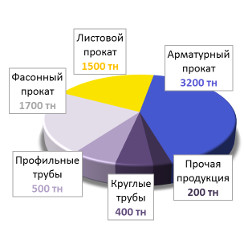
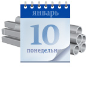
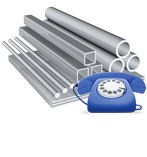
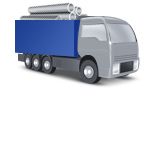

Наши партнеры

На сегодняшний день налажены долгосрочные взаимоотношения со многими крупными заводами-изготовителями металлопроката России и зарубежья:
- ММК, НЛМК, Северсталь, Запорожсталь, НСММЗ, Мечел, МЗ им Серова;
- Евразхолдинг, Уральская сталь, Кармет, Ашинский МЗ, Амурметалл, Гурьевский МЗ, Чусовской МЗ, Верхнесалдинский МЗ, Омутнинский МЗ, Ревякинский МЗ;
- Борский ТЗ, ТМК, Рязанский ТЗ, Агрисовгаз, Новосибирский завод им. Кузьмина, Уралтрубпром, Уралтрубосталь.
Закупочную деятельность компании осуществляет «Отдел снабжения»
Кирилюк Дмитрий Владимирович
Руководитель отдела
тел./факс: +7 (3452) 520-675
Среднемесячный уровень потребления металлопроката — 4,5 тыс. тн.
Компания «Тримет» — одна из крупнейших Тюменских компаний, осуществляющая комплексное снабжение металлопрокатом, основана в 2002 г. С 2004 г. входит в состав РСПМ.
В собственности компании производственно-складской комплекс: площадь крытого склада — 10 тыс. кв.м., вместимость — 15 тыс. тн металла, удобные подъездные железнодорожные и автомобильные пути.
Удовлетворение требований металлопотребителей с максимальной экономической эффективностью, качеством и кратчайшими сроками являются основными приоритетами закупочной деятельности компании.
Постоянный поиск и выбор альтернативных поставщиков-изготовителей позволяет компании укреплять свои позиции на Тюменском рынке металла.
Планирование поставок
важная часть закупочной деятельности компании
Для удобства планирования поставок компания разделяет для себя закупочную деятельность на плановые и оперативные закупки. Плановый закуп осуществляется путем поставки необходимого количества товаров единовременно (от 65 тн), а оперативный по мере необходимости в товаре.
|
 |
Плановые ежемесячные закупки, для их осуществления «Тримет» приглашает к долгосрочному сотрудничеству производителей металлопроката, а также официальных дилеров и торговых представителей. Для того чтобы ваше предложение было рассмотрено, необходимо предоставить сведения о компании.
|
|
 |
Оперативные потребности в металлопрокате, для их обеспечения «Тримет» принимает предложения по поставке продукции от металлоторговых компаний близлежащих регионов (Свердловская, Курганская, Омская, Челябинская обл., Пермский край, респ. Башкортостан). Для рассмотрения вашего предложения, предоставьте сведения о компании.
|
|
 |
Одной из дополнительных услуг, предлагаемых компанией «Тримет» покупателям, является полная комплектация заказа. Докомплектация заказов предполагает поставку следующего ассортимента:
|
Предложение по сотрудничеству необходимо направить по следующим реквизитам: +7 (3452) 520-675 или по электронной почте